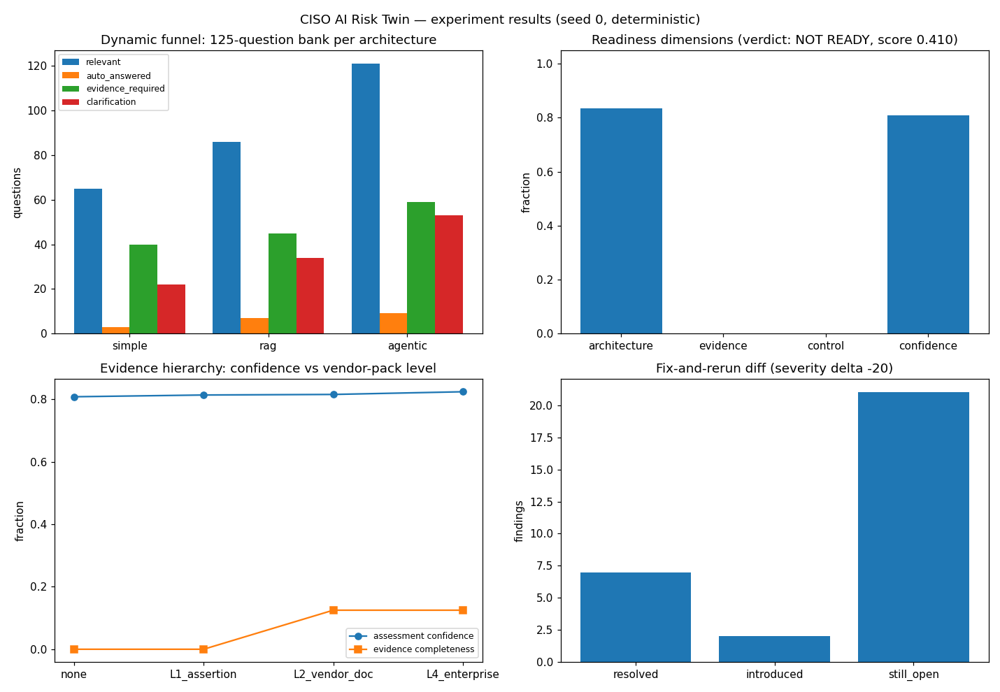

Classification puts a label on words. Inference figures out what you want — goal, constraints, missing pieces — then plans.
Traditional chatbots treat language understanding as classification: utterance → one predefined intent label → dialogue manager → API call. This breaks on paraphrases with low lexical overlap ("Can you tell me whether I can afford lunch today?"), multiple intents in one utterance ("I forgot my password, but I also changed my phone number, and I can't receive OTP"), implicit goals ("I'm hungry"), intent that evolves across turns ("I have an interview tomorrow" … "What should I wear?"), and utterances whose meaning exists only in context ("Book me a hotel" … "Make it cheaper"). A single label cannot represent any of these, and a stateless router cannot resolve the last two at all.
Intent taxonomies are designed by developers, not discovered from users. Every utterance outside the catalog — or combining several in-catalog intents — collapses to the same dead end: a low-confidence prediction or a generic "Sorry, I didn't understand. Please rephrase." Confidence scores measure how well an utterance matches training examples, not whether the system understands what the user wants. The dialogue manager has no notion of goals, missing information, or conversation history.
A ChatGPT-style inference pipeline in which intent is emergent, never classified: conversation memory → semantic understanding (meaning frames, not labels) → goal extraction producing structured goals (primary/secondary, constraints, missing info, confidence) → task decomposition → planner (ask-vs-act, tool selection) → orchestrator dispatching specialist stub agents. Situation prototypes match utterances in embedding space with discriminative-term gating; per-clause decomposition handles multi-intent input; predicate-level disambiguation resolves "afford lunch" to money, not hunger; evidence-checked missing-info questions are asked only when the answer is genuinely absent.
| Phenomenon | n | Classifier | Inference pipeline |
|---|---|---|---|
| paraphrase | 5 | 0.40 | 1.00 |
| multi-intent | 3 | 0.00 | 1.00 |
| latent | 2 | 0.50 | 1.00 |
| dynamic | 1 | 0.00 | 1.00 |
| context | 3 | 0.33 | 1.00 |
| out-of-catalog | 2 | 0.00 | 1.00 |
| standard | 5 | 1.00 | 1.00 |
Aggregate task success: classifier 45% vs pipeline 100% (recall 1.0, precision 1.0). The classifier's 7 clarifications are all the same useless fallback; the pipeline's 6 are targeted missing-info questions. No utterance ever yields "unknown".

experiments/run_experiments.py — re-running reproduces these exactly.src/agentic_systems/intent_inference/
classifier.py # TF-IDF + softmax regression (numpy) + dialogue manager
embeddings.py # semantic space over gated situation prototypes
memory.py # conversation memory: entities, goals, facts, anaphora
goals.py # structured goal extraction + missing-info evidence checks
planner.py # decomposition, ask-vs-act, tool selection
orchestrator.py # stub agents with deterministic structured outcomes
pipeline.py # the full inference loop; evaluate.py grades both systems
07-intent-inference/
experiments/run_experiments.py # frozen 20-case suite, seed 7
Full source, tests, and experiment code: 07-intent-inference/ ·
Run: cd 07-intent-inference && python3 experiments/run_experiments.py